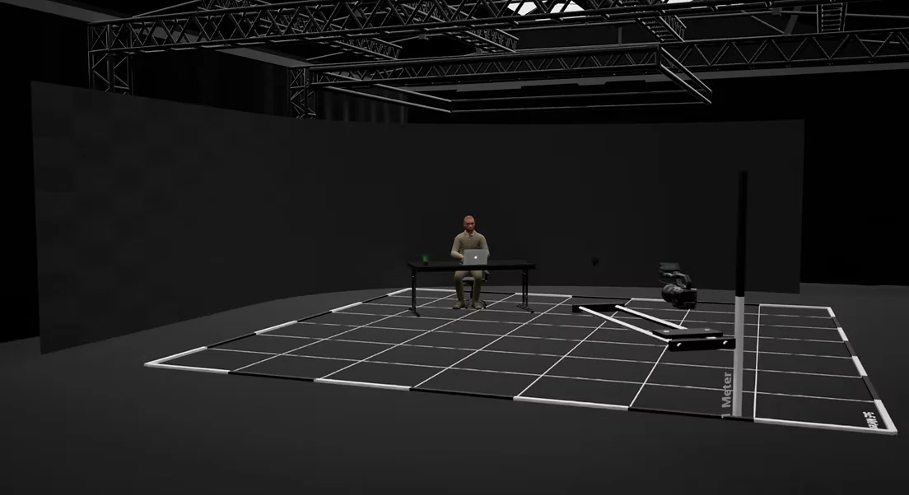
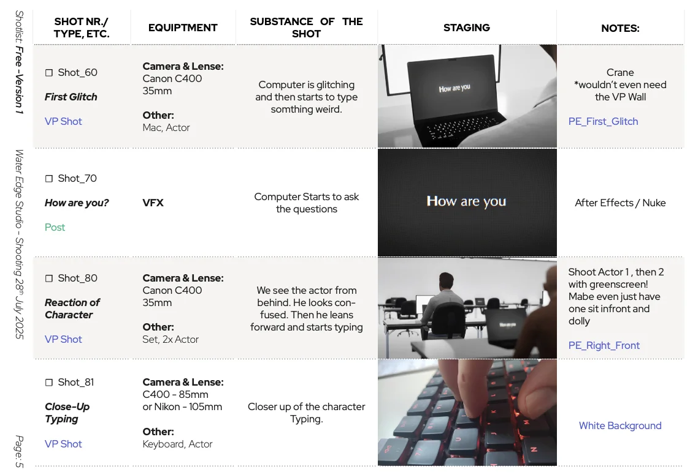
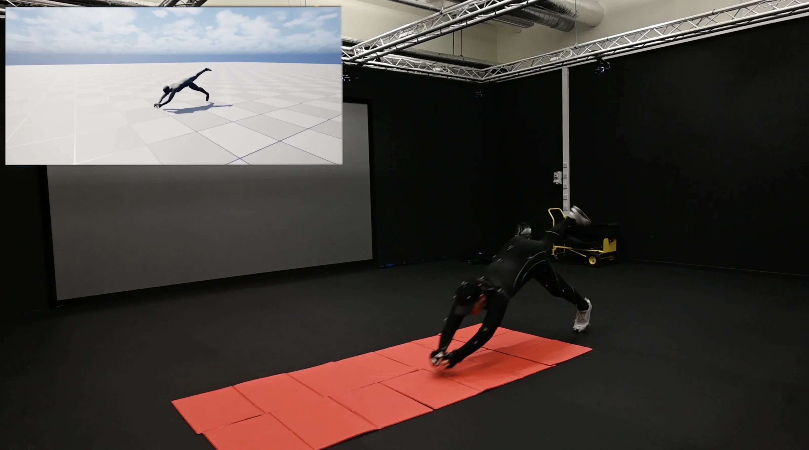

Previs:
Techvis
The Motion Capturing done in the ViPRE Studio at Abertay University. It's a Vicon setup with infrared markers and 12 tracking cameras. Retarget & clean up of the animation was done in Maya, and finally exported into Unreal Engine 5. Further utilised for Metahuman animations on Virtual Production LED Wall as background for a VFX Production.


Shot & Stage Plans
Example of the Staging (Left) and Shot plan (Right). They are quite basic, but why make it more complicated than it has to be? Both were immensely helpful during production and kept things organised and efficient. The whole project was shot in 1.5 shooting days.
Motion Capturing
The Motion Caputing was done in the ViPRE Studio at Abertay University. It's a Vicon setup with infrared markers and 12 tracking cameras. Retarget & Clean up of the animation was done in Maya, and finally exported into Unreal Engine 5. For this project, the Mocap was performed by myself, while I hade James Marsh assist with the running Shogun.
